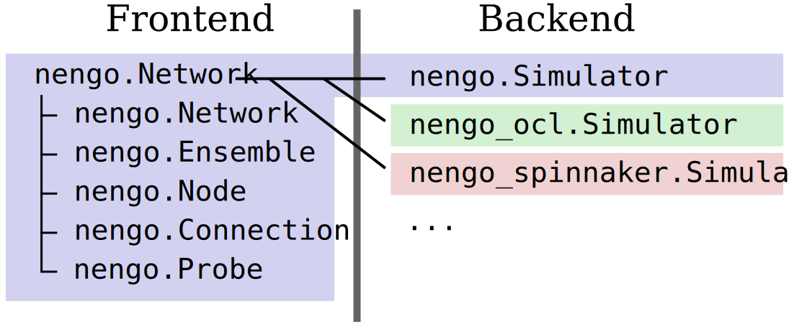

Nengo's test suite & benchmarking
Trevor Bekolay
tbekolay@gmail.com
Architecture of Nengo

Simulator object
with nengo.Network() as model: ... sim = nengo.Simulator(model) sim.run(2.0) # Run for 2 seconds sim.run(1.0) # Run for another second sim.trange() # [0.001, 0.002, 0.003, ...] sim.data[probe] # [[0.0, 0.0], [0.02, -0.02], ...]
Why?

Nengo backends
nengonengo_oclnengo_mpinengo_distillednengo_brainstormsnengo_spinnaker
Testing Nengo

Testing 101
import nengo def test_ensemble(): with nengo.Network() as model: ens = nengo.Ensemble(40, dimensions=1) assert model.ensembles[0] is ens
. 1 passed in 0.02 seconds
C1: What is 'correct'?
sim.run(1.0) decoded_value = sim.data[my_probe] assert decoded_value == 1.0
# Fuzzy testing assert np.allclose( decoded_value[sim.trange() > 0.8], 1.0, atol=0.1)
C2: Randomness
sim1 = nengo.Simulator(model) assert sim1.data[a.encoders] == [[-0.7311976, -0.3121639], [ 0.1879579, 0.1909519]] # passes
sim2 = nengo.Simulator(model) assert sim2.data[a.encoders] == [[-0.7311976, -0.3121639], [ 0.1879579, 0.1909519]] # fails
model.seed = 1 sim = nengo.Simulator(model) assert sim.data[a.encoders] == [[-0.7311976, -0.3121639], [ 0.1879579, 0.1909519]] # always passes
Ex: 1D representation
import nengo; import numpy as np def test_ensemble(): with nengo.Network(seed=1) as model: stim = nengo.Node([0.5]) ens = nengo.Ensemble(40, dimensions=1) nengo.Connection(stim, ens) probe = nengo.Probe(ens, synapse=0.05) sim = nengo.Simulator(model) sim.run(0.5) assert np.allclose( sim.data[probe][sim.trange() > 0.4], 0.5, atol=0.1)
. 1 passed in 0.19 seconds
pytest fixtures
- Explicit, modular, scalable
import pytest @pytest.fixture def my_fixture(): return 'This is my fixture' def test_something(my_fixture): print(my_fixture) # prints 'This is my fixture'
Simulator
import nengo; import numpy as np from nengo.tests.conftest import Simulator def test_ensemble(Simulator): with nengo.Network(seed=1) as model: stim = nengo.Node([0.5]) ens = nengo.Ensemble(40, dimensions=1) nengo.Connection(stim, ens) probe = nengo.Probe(ens, synapse=0.05) sim = Simulator(model) sim.run(0.5) assert np.allclose( sim.data[probe][sim.trange() > 0.4], 0.5, atol=0.1)
. 1 passed in 0.18 seconds
nl
import nengo; import numpy as np from nengo.tests.conftest import Simulator from nengo.tests.conftest import pytest_generate_tests def test_ensemble(Simulator, nl): with nengo.Network(seed=1) as model: model.config[nengo.Ensemble].neuron_type = nl() stim = nengo.Node([0.5]) ens = nengo.Ensemble(40, dimensions=1) nengo.Connection(stim, ens) probe = nengo.Probe(ens, synapse=0.05) sim = Simulator(model) sim.run(0.5) assert np.allclose( sim.data[probe][sim.trange() > 0.4], 0.5, atol=0.1)
..... 5 passed in 0.71 seconds
seed / rng
import nengo; import numpy as np from nengo.tests.conftest import Simulator, seed from nengo.tests.conftest import pytest_generate_tests def test_ensemble(Simulator, nl, seed): with nengo.Network(seed=seed) as model: model.config[nengo.Ensemble].neuron_type = nl() stim = nengo.Node([0.5]) ens = nengo.Ensemble(40, dimensions=1) nengo.Connection(stim, ens) probe = nengo.Probe(ens, synapse=0.05) sim = Simulator(model) sim.run(0.5) assert np.allclose( sim.data[probe][sim.trange() > 0.4], 0.5, atol=0.1)
..... 5 passed in 0.72 seconds
Benchmarking is difficult
Benchmarks are commonly
- biased
- effortful
- become out of date quickly
But benchmarks can drive progress.
Testing ≈ benchmarking
Let's use Nengo's testing infrastructure to benchmark backends
plt
import nengo; import numpy as np from nengo.tests.conftest import Simulator, plt, seed from nengo.tests.conftest import pytest_generate_tests def test_ensemble(Simulator, nl, seed, plt): with nengo.Network(seed=seed) as model: model.config[nengo.Ensemble].neuron_type = nl() stim = nengo.Node([0.5]) ens = nengo.Ensemble(40, dimensions=1) nengo.Connection(stim, ens) probe = nengo.Probe(ens, synapse=0.05) sim = Simulator(model) sim.run(0.5) plt.plot(sim.trange(), sim.data[probe]) assert np.allclose( sim.data[probe][sim.trange() > 0.4], 0.5, atol=0.1)
plt
..... 5 passed in 1.89 seconds
nengo.simulator.plots
├── Direct
│ └── test_ensemble.pdf
├── LIF
│ └── test_ensemble.pdf
├── LIFRate
│ └── test_ensemble.pdf
├── RectifiedLinear
│ └── test_ensemble.pdf
└── Sigmoid
└── test_ensemble.pdf
5 directories, 5 files
plt

analytics
import nengo; import numpy as np from nengo.tests.conftest import (Simulator, analytics, plt, seed, pytest_generate_tests) def test_ensemble(Simulator, nl, seed, analytics, plt): with nengo.Network(seed=seed) as model: model.config[nengo.Ensemble].neuron_type = nl() stim = nengo.Node([0.5]) ens = nengo.Ensemble(40, dimensions=1) nengo.Connection(stim, ens) probe = nengo.Probe(ens, synapse=0.05) sim = Simulator(model) sim.run(0.5) plt.plot(sim.trange(), sim.data[probe]) analytics.add_data('out', sim.data[probe], "decoded out") assert np.allclose( sim.data[probe][sim.trange() > 0.4], 0.5, atol=0.1)
analytics
..... 5 passed in 1.80 seconds
nengo.simulator.analytics
├── Direct
│ └── test_ensemble.npz
├── LIF
│ └── test_ensemble.npz
├── LIFRate
│ └── test_ensemble.npz
├── RectifiedLinear
│ └── test_ensemble.npz
└── Sigmoid
└── test_ensemble.npz
5 directories, 5 files
logger
import nengo; import numpy as np from nengo.tests.conftest import (Simulator, analytics, plt, logger, seed, pytest_generate_tests) def test_ensemble(Simulator, nl, seed, analytics, logger, plt): with nengo.Network(seed=seed) as model: model.config[nengo.Ensemble].neuron_type = nl() stim = nengo.Node([0.5]) ens = nengo.Ensemble(40, dimensions=1) nengo.Connection(stim, ens) probe = nengo.Probe(ens, synapse=0.05) sim = Simulator(model) sim.run(0.5) plt.plot(sim.trange(), sim.data[probe]) analytics.add_data('out', sim.data[probe], "decoded out") logger.info('RMSE=%f', nengo.utils.numpy.rmse( sim.data[probe][sim.trange() > 0.4], 0.5)) assert np.allclose( sim.data[probe][sim.trange() > 0.4], 0.5, atol=0.1)
logger
..... 5 passed in 1.86 seconds
nengo.simulator.logs
├── Direct
│ └── test_ensemble.txt
├── LIF
│ └── test_ensemble.txt
├── LIFRate
│ └── test_ensemble.txt
├── RectifiedLinear
│ └── test_ensemble.txt
└── Sigmoid
└── test_ensemble.txt
5 directories, 5 files
logger
[INFO] === Test run at 2015-06-15 13:44:12 === [INFO] RMSE=0.000094
[INFO] === Test run at 2015-06-15 13:44:12 === [INFO] Cache hit [557ba1f3a5c815f201a71c859e8b41376f2a9885]: Loaded stored decoders. [INFO] RMSE=0.004409
Benchmarks to collect
- Compliance
- Accuracy
- Speed
Compliance

Accuracy & speed
- Chain of 3 communication channels
- 2-dimensional product
- Controlled oscillator
- SPA sequence with memory
Accuracy


Build speed


Run speed


Conclusion
- Nengo's test framework provides infrastructure for building useful benchmarks.
- Take these results with a grain of salt!
- Benchmarking is difficult.